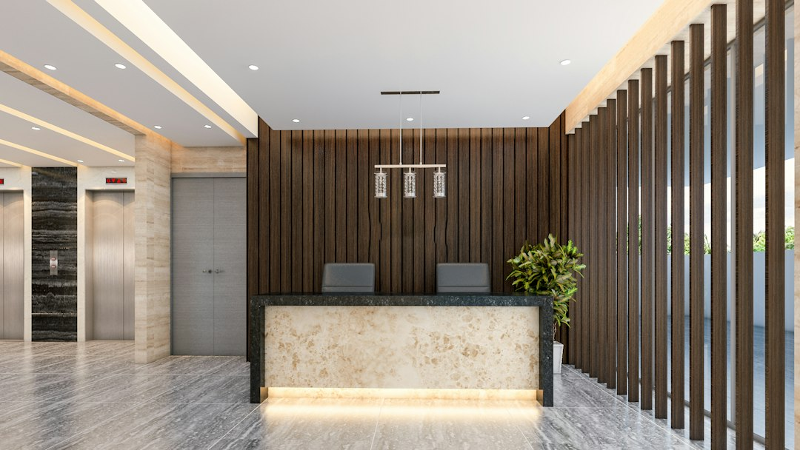

Ottimizzare la Gestione dello Studio Dentistico: Come Dentis AI Riduce Sprechi e Costi Operativi

Ottimizzare la Gestione dello Studio Dentistico: Guida Operativa per Ridurre Sprechi di Tempo e Costi
- Il caos delle chiamate perse e orari limitati rappresenta un problema cruciale per qualsiasi studio dentistico.
- Pazienti insoddisfatti e segreterie oberate aumentano costi e inefficienze gestionali.
- Dentis AI con Serena, receptionist vocale AI 24/7, trasforma queste criticità in vantaggi competitivi misurabili.
Analisi Approfondita della Notizia e delle Implicazioni Operative
Nel mondo odontoiatrico, la comunicazione efficace con i pazienti è alla base di una gestione efficiente e di successo dello studio. La notizia più recente evidenzia come molti studi dentistici perdano quotidianamente chiamate importanti al di fuori degli orari di apertura canonici, creando disagi e aumentando l’ansia dei pazienti soprattutto durante weekend o festività. Questo fenomeno genera una cascata di problemi operativi: dal calo della soddisfazione del paziente all’inefficienza del personale, in particolare della segreteria, sovraccaricata da richieste urgenti difficili da gestire tempestivamente.
La pressione crescente sui team amministrativi degli studi dentistici mette in evidenza il bisogno impellente di soluzioni digitali avanzate che garantiscano risposta continua, gestione intelligente dei contatti e sincronizzazione fluida con l’agenda dello studio. La pandemia ha inoltre accelerato la sensibilità verso strumenti che supportino l’operatività a distanza e continuativa, sottolineando come un sistema di accoglienza vocale AI possa diventare un asset imprescindibile per chi gestisce studi moderni e orientati al paziente.
Le Conseguenze e i Costi di Non Agire
I rischi di non affrontare tempestivamente questa criticità sono molteplici e pericolosi per la competitività dello studio dentistico. Le chiamate perse fuori orario si traducono spesso in prenotazioni mancate o pazienti insoddisfatti che possono rivolgersi facilmente ad altri competitor più reattivi. Nei weekend o durante le festività, la mancata assistenza aumenta l’ansia dei pazienti in attesa di risposte su urgenze, costringendo a interruzioni dell’attività del personale dedicato o creando situazioni di burnout per la segretaria che tenta di gestire tutto manualmente.
Questa situazione genera un circolo vizioso: il sovraccarico di lavoro costa tempo prezioso che si traduce in inefficienze operative e, in ultima analisi, in costi più elevati di gestione. Le segreterie tradizionali, senza supporto tecnologico adeguato, faticano a rispondere efficacemente e in modo tempestivo, causando frustrazione sia interna sia esterna. Senza processi automatizzati di triage e reminder, il rischio di errori aumenta, così come quello di perdite economiche dovute a doppie prenotazioni oppure appuntamenti saltati senza preavviso.
Come Dentis AI Risolve il Problema
Dentis AI introduce una svolta significativa nella gestione quotidiana degli studi dentistici grazie a Serena, la receptionist telefonica vocale AI H24. Serena è progettata per alleviare il carico della segreteria, rispondendo alle chiamate in qualsiasi momento, senza interruzioni o perdita di informazioni.
Le funzionalità principali di Dentis AI permettono di:
- Gestire il triage delle urgenze con empatia, indirizzando correttamente il paziente e fornendo risposte immediate.
- Sincronizzare automaticamente Google Calendar per aggiornare l’agenda in tempo reale, evitando errori o sovrapposizioni.
- Inviare promemoria via WhatsApp per ridurre le mancate presentazioni e mantenere alta la compliance ai trattamenti.
Questa tecnologia non solo assicura un servizio continuo e puntuale, ma migliora l’esperienza del paziente rendendolo più sereno e fidelizzato. La segretaria può così concentrarsi su attività a maggior valore aggiunto, liberata dai compiti ripetitivi e stressanti legati alla gestione delle chiamate fuori orario.
Il modello di offerta con prova gratuita di 7 giorni senza carta di credito e piano PRO a €149/mese rende inoltre Dentis AI una soluzione accessibile e scalabile, pronta per essere integrata in ogni studio moderno che voglia ridurre sprechi di tempo e costi senza sacrificare la qualità del servizio.
| Gestione Tradizionale | Con Dentis AI |
|---|---|
| Chiamate perse fuori orario frequenti | Risposta automatizzata 24/7 con triage urgenze |
| Segretaria sovraccarica e stressata | Segretaria supportata, concentrata su attività strategiche |
| Mancata sincronizzazione agenda e promemoria | Google Calendar sincronizzato con promemoria WhatsApp automatici |
| Pazienti in ansia soprattutto nei weekend | Supporto empatico AI, gestione tempestiva e rassicurante |
💡 Ti è stato utile questo approfondimento?
Condividilo con un collega o un amico del settore Odontoiatri, Titolari di Studi Dentistici e Direttori Sanitari a cui potrebbe interessare!
FAQ: Domande Frequenti su Dentis AI per Studi Dentistici
1. Serena può gestire anche prenotazioni durante orari straordinari?
Assolutamente sì. Serena garantisce assistenza attiva 24/7, permettendo ai pazienti di prenotare o richiedere informazioni in qualsiasi momento, indipendentemente dagli orari di apertura tradizionali.
2. Come avviene la sincronizzazione con Google Calendar?
Dentis AI integra in modo nativo Google Calendar aggiornando in tempo reale gli appuntamenti presi tramite chiamata e inviando promemoria automatici per evitare no-show.
3. Quanto è semplice implementare Dentis AI in uno studio già esistente?
Il setup è rapido e non richiede competenze tecniche avanzate. Inoltre, grazie alla prova gratuita di 7 giorni, è possibile testare tutte le funzionalità senza impegno e senza inserire dati di pagamento.
Inizia Subito
Prova Gratuita di 7 giorni senza carta di credito. Piano PRO a €149/mese.
Fonti Ufficiali e Risorse Esterne
Scopri l'Intelligenza Artificiale per la tua attività
Ottimizza i processi e aumenta le vendite con le soluzioni B2B di RM Studio.
Scopri Dentis AI